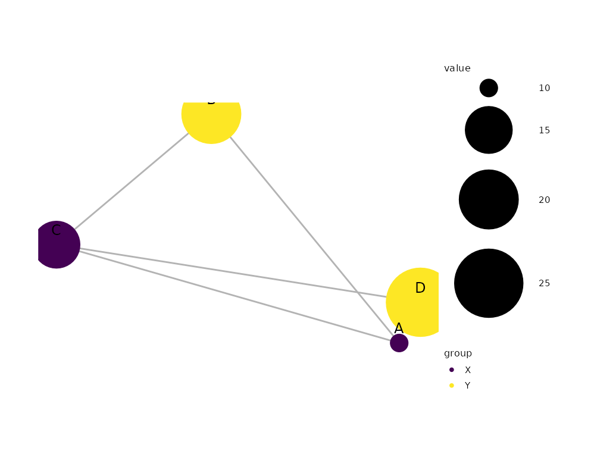

Creates a network visualization from a nodes table (main data) plus an
edges table. Equivalent to the pipeline
as_graph() |> layout_force()/layout_circle() |> mark_point(data = ~nodes) |> mark_rule(data = ~edges) – the composite
form exists so common network plots stay one-call simple. The laid-out
graph is stored on @graph, so subsequent marks can reference
~nodes / ~edges directly, and layers/scales/theme added before this
call are preserved (additive composition).
Usage
mark_network(
plot,
edges = NULL,
encode_edges = NULL,
layout = c("auto", "circle", "manual"),
seed = NULL,
edge_color = ._MARK_STYLE$faint,
edge_width = ._MARK_STYLE$lw_thin,
edge_alpha = NULL,
edge_shape = c("straight", "curved"),
node_color = ._MARK_STYLE$primary,
node_size = 5,
show_labels = TRUE,
...
)Arguments
- plot
A plotit object. The data should be a data.frame of nodes whose first column is a unique id.
- edges
A data.frame of edges with literal
source/targetcolumns, or mapped throughencode_edges.- encode_edges
An
encode()object withsource(required),target(required),value(optional magnitude). Visual channels supported on edges:colour/linewidth/linetype/alpha, referenced against original edge columns.- layout
Layout algorithm:
"auto"(force-directed),"circle", or"manual"(numericx/ycolumns on the nodes table).- seed
Random seed for the force layout (reproducibility).
- edge_color
Default edge colour when no edge colour channel is mapped (default
._MARK_STYLE$faint="grey70").- edge_width
Default edge width when no edge linewidth channel is mapped (default
._MARK_STYLE$lw_thin= 0.5).- edge_alpha
Optional alpha transparency for edge segments.
NULL(default) leaves the edges fully opaque – unlike the area bands of sankey/chord, thin strokes do not need translucency; the parameter exists so the unified edge vocabulary (edge_color/edge_width/edge_alpha) is available on every relational sugar.- edge_shape
"straight"(default) renders each edge as a rule;"curved"renders quadratic-bezier links throughmark_curve(), reducing visual overlap in dense networks. Curve tension is tunable viacurvaturein....- node_color
Default node colour, applied to the
colourandfillchannels only where they are not mapped (default._MARK_STYLE$primary="#4E79A7").- node_size
Default node size when
sizeis not mapped (default 5).- show_labels
If
TRUE(default), draw node labels when a globallabelaesthetic is mapped.- ...
Other arguments passed to the edge segment layer (e.g.
arrow).
Details
Fully self-contained: the force/circle layouts run on plotit's own
deterministic engines and rendering is plain ggplot2 layers. Edges
render as straight segments; curved edges are a known limitation of the
sugar form. Mapped node colour/fill channels ship with the curated
token palette (friendly qualitative / viridis sequential, chain
scale_color() to replace).
References
AntV G2: ForceGraph
Examples
nodes <- data.frame(
name = c("A", "B", "C", "D"),
group = c("X", "Y", "X", "Y"),
value = c(10, 20, 15, 25)
)
edges <- data.frame(
source = c("A", "A", "B", "C"),
target = c("B", "C", "C", "D"),
value = c(1, 2, 3, 4)
)
nodes |>
plotit(encode(color = group, size = value, label = name)) |>
mark_network(edges = edges, seed = 1) |>
scale_color(range = "viridis") |>
scale_size(range = c(5, 20))
#> Warning: `range` = "viridis" with a discrete "colour" variable uses the discrete
#> "viridis" variant.
#> ℹ For a continuous gradient, map a numeric column instead.
#> Scale for colour is already present.
#> Adding another scale for colour, which will replace the existing scale.
